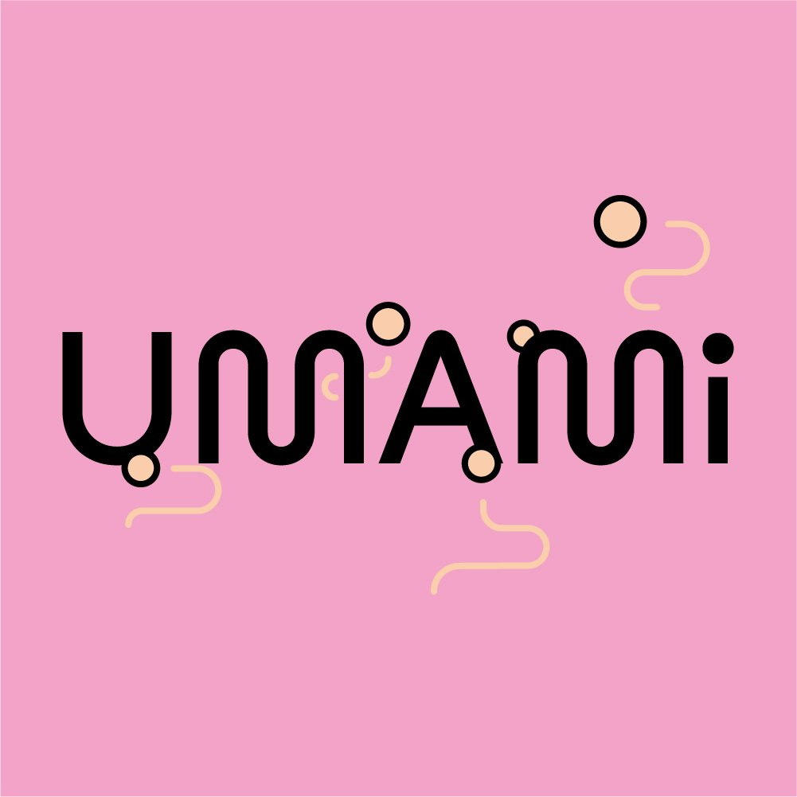

Umami, c'est un espace pour apprendre, goûter, expérimenter et rencontrer celles et ceux qui fermentent au quotidien.
Pendant deux jours, producteur·ices, cuisinier·ères et artisan·es viennent partager leurs pratiques à travers des dégustations, des ateliers et des démonstrations. Une invitation à ralentir, à goûter autrement et à découvrir la fermentation sous toutes ses formes.
Né à Nantes il y a 5 ans, UMAMI s'est imposé comme le rendez-vous incontournable des amoureux·ses de fermentation. Chaque édition rassemble producteur·ices, artisan·es et curieux·ses autour d'une même conviction : la fermentation est vivante, et elle mérite qu'on s'y attarde.
Tramway ligne 1 — arrêt Chantiers Navals (5 min à pied)
Bus C6 — arrêt Prairie au Duc (1 min)
Vélo — station Bicloo à 50 m
Voiture — parking Hangar à Bananes, 200 m